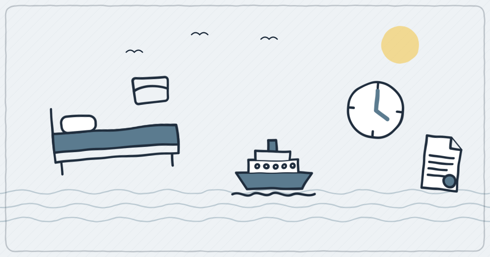

Noisy Cruise Cabin: How to Get It Fixed or Moved
Go to guest services the first night with specifics: what the noise is, where it comes from and when. Mechanical noises usually get fixed, and a cabin move is possible when the ship has empty cabins. Compensation, if any, is a modest onboard credit, and it is far more likely when you complained early and the ship was at fault.

Noise is the most common cabin complaint on a cruise, and the outcome depends almost entirely on timing. A specific complaint on night one gives the ship a chance to repair, relocate or at least record it. The same complaint on the last morning is a comment card. Here is what the crew can do, what they will not do, and how to word the request so it lands.
What is making the noise in my cabin?
Before you call anyone, work out what you are hearing and when. The fix depends on the source.
- Scraping and thumping from above between 5 and 7 a.m. Deck crew setting out loungers on the pool deck, or the buffet opening. Location noise, not a fault.
- Bass and crowd noise until 1 or 2 a.m. A lounge, nightclub or theatre above or below you. Also location.
- A rattle, hum or whistle that is there all the time. A loose panel, a vent, a door closer or plumbing. This is a fault, and faults get fixed.
- Clanking and vibration early on port mornings. The anchor chain or bow thrusters. Normal operation in cabins low and forward; nobody can switch it off.
- Doors slamming, voices in the corridor. Stairwell or lift traffic, or crew service doors. Partly location, partly behaviour.
- TV, voices or a baby through the wall. Neighbours. Security can speak to them; the line will not compensate.
Corridor announcements can also wake light sleepers on some ships, though they are normally kept out of cabins; how cruise ship announcements work explains what you will hear and when.
Who do I tell, and what do I say?
Guest services, in person, the first evening or at breakfast the next morning. Ask them to log the complaint against your cabin number so there is a record. Then make one clear request.
If nothing has changed after 24 hours, go back and ask for the guest services manager or the hotel director's office. Keep it polite and keep it short; the people at the desk did not design the ship.
Keep a simple record
- Note the dates and times you heard the noise.
- Record a 20-second clip on your phone.
- Write down the names of the staff you spoke to and what they promised.
- Take a photo of any work order or confirmation slip.
That record is what turns "we were disturbed" into a claim the line can act on if you write afterwards.
Will the ship move me to another cabin?
Only if there is somewhere to go. Cruise lines sell ships to the last cabin in school holidays, over Christmas and through July and August, so a move may be impossible in peak weeks. In shoulder season there are often a few empty cabins, and a reasonable request on day one frequently gets one.
Be realistic about the swap. You may be offered a cabin in a different category, sometimes lower, sometimes a guarantee somewhere else on the ship. A quieter inside cabin can be a better week than a loud balcony.
What compensation can I expect?
It depends on whether the ship could have done anything about it. A loose vent, a rattling panel or a faulty door closer gets fixed the same day, and once it is fixed there is nothing to compensate. Machinery or plumbing noise that should not be there is the strongest case: if the ship cannot repair it and cannot move you, a credit is realistic.
The weaker cases are the ones that were on the deck plan all along. A pool deck or buffet overhead at dawn, a nightclub or theatre above or below: the ship will offer earplugs or a move if space allows, but a credit is unlikely because you booked that location. Anchor and thrusters in port are simply what ships do. Noisy neighbours are a security matter, not a compensation one.
When something is offered, it is typically onboard credit in the range of a modest dinner or a drinks bill, occasionally a specialty restaurant meal or a future cruise discount. Refunds for noise are rare. The strongest cases involve a fault the ship could neither fix nor escape, raised early and documented.
Stopgaps while you wait
- Ask your cabin attendant for earplugs; most ships keep a supply.
- Run a white-noise or fan app on your phone, or ask whether the ship can lend a fan, which also helps if the cabin runs warm (see fixing cruise cabin temperature).
- Hang the "do not disturb" sign and tell your attendant your preferred service time if the morning knock is part of the problem.
- Shift your routine a little: a late breakfast beats lying there listening to loungers being dragged.
How to avoid a noisy cabin on your next cruise
Prevention is cheaper than any complaint. Before booking, look at the deck plan and check the deck directly above, directly below and both sides. The quietest spots are cabins surrounded by other cabins, midship, away from lifts, stairwells and the blank spaces on the plan that mark crew areas and machinery.
If deck-plan terms such as "midship", "forward" and "tender platform" are new to you, cruise terms explained covers them.
Want this checked for your own sailing? A licensed cruise consultant can price it up and answer questions for free, with no obligation.
Ask a cruise expert →A fair deal both ways
Ships are machines carrying thousands of people, and some sound is unavoidable. Report real problems quickly and specifically, accept a genuine fix, and spend ten minutes with the deck plan before the next booking. That combination resolves most noisy-cabin stories before they become one.
Still wondering?
Will a cruise ship move me to a different cabin because of noise?
If a comparable cabin is empty, often yes. Ships sail close to full in peak season, so there may be nothing to offer. Asking on the first evening, before no-show cabins are released, gives you the best odds.
How much compensation do you get for a noisy cruise cabin?
Usually a small onboard credit or a gesture such as a dinner, not a refund. It depends on the cause: a mechanical fault the ship could not fix is worth something; a cabin under the pool deck that you chose is worth very little. Complaints logged during the cruise carry the weight.
Which cruise cabins are the noisiest?
Anything directly under the pool deck, buffet, gym or jogging track; cabins beside lifts, stairwells and crew doors; cabins above or below theatres, nightclubs and bars; and low forward cabins near the anchor and thrusters. Connecting cabins also leak sound through the shared door.